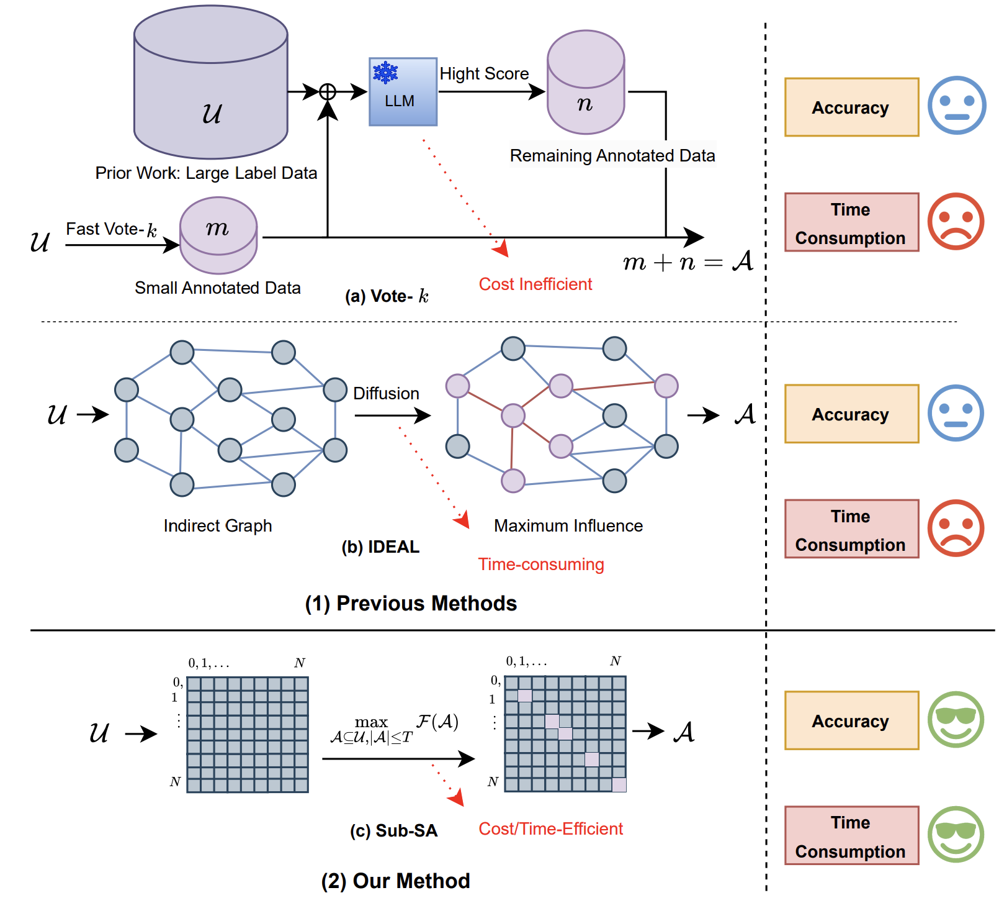

Jian Qian
Email / Google Scholar / LinkedIn / GitHub
Bio
I am an AI researcher. My current research focuses on efficient machine learning and systems. I finished my master's degree in Electronic Information from Fudan University, advised by Patrick Yin Chiang, and received my bachelor's degree in Automation from Hefei University. I've worked at SONY China and Smartsens Technology Co., Ltd..
Publications [Full List]


A 40nm 2TOPS/W Depth-Completion Neural Network Accelerator SoC With Efficient Depth Engine for Realtime LiDAR Systems
Miao Sun, Yingjie Cao, Jian Qian et al.
IEEE TCSII,
2023